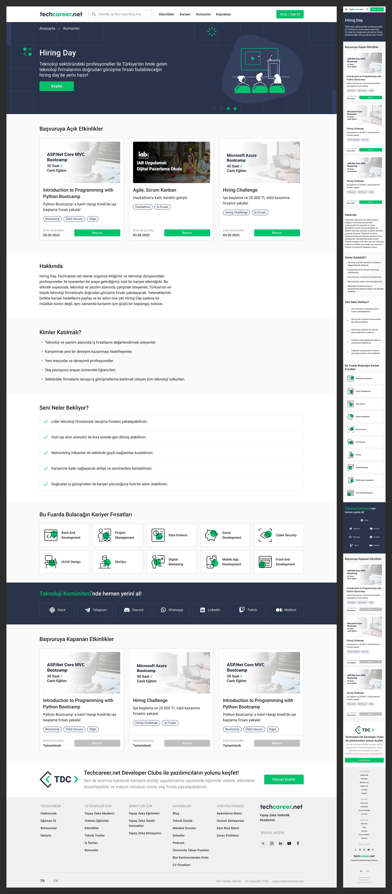
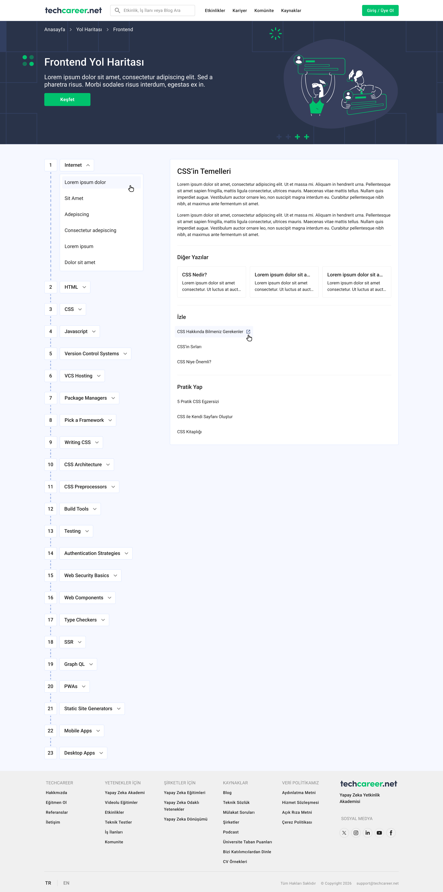
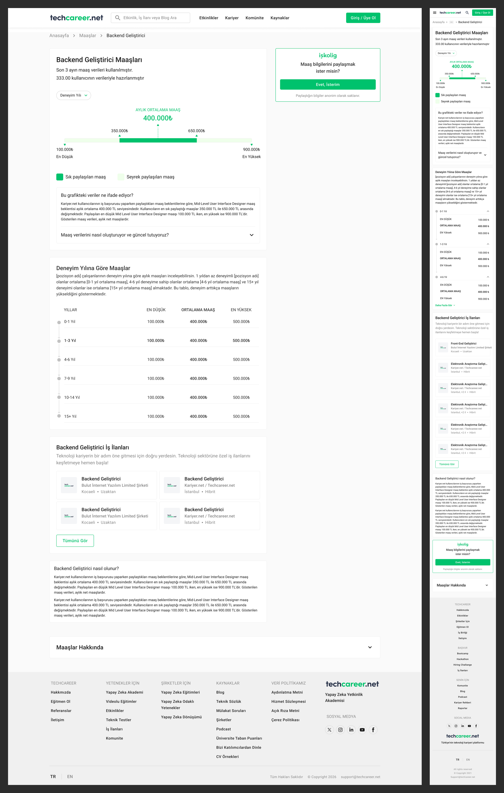
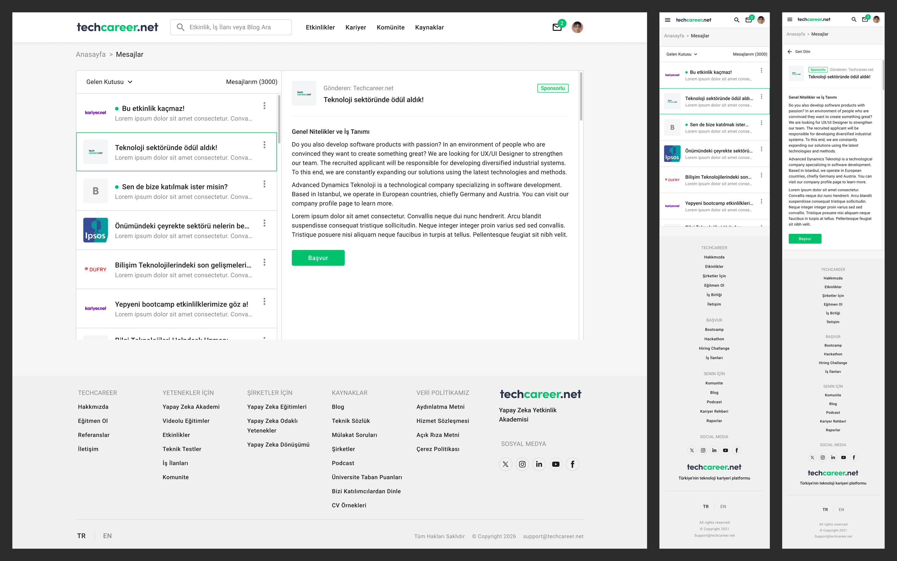

The Academy: selling paid courses on a free platform
The Academy is Techcareer.net's paid-course business, a commercial offering that lives alongside the platform's free bootcamps, events, and training programs, and has to justify its price tag to an audience used to getting everything for free. The page works like a storefront: course categories and live course cards up top, then trust-building layers (instructor spotlights, community videos, partner logos, and an FAQ) organized into a scannable rhythm with a dark hero setting the premium tone.

Every section reuses design-system components allowing the pages to stay consistent as the platform evolves.
Hiring Day: recruitment as an event
Hiring Day turns recruitment into a scheduled event: companies and candidates meet around a date, and the page has to do the work of an event brochure and an application funnel at once. Open events lead with their deadlines and one-tap applications; expectation-setting sections remove the hesitation; and closed events stay visible as social proof that the format works.

Career roadmaps: structure as a feature
The roadmap pages turn a vague ambition, such as "become a frontend developer", into a numbered, navigable path. The design's job is to make a long journey feel attainable and legible, with persistent progress structure on the left and focused content on the right.

Salary insights: data people can act on
Salary pages answer the question every job seeker types into a search bar and rarely gets a straight answer to. Each role page leads with the average, then adds the context: the min–max range, the most commonly reported salary, and a breakdown by years of experience, with related job listings one scroll away to connect the insight directly to action.

Messaging: the logged-in conversation
Once companies and candidates connect, the conversation moves into the platform's inbox. The desktop layout pairs the conversation list with a reading pane so triage is fast; on mobile the same components stack into a list-then-detail flow. Sender identity, subject, and unread state carry the visual weight, because scanning is the job.

Responsive as a discipline, not an afterthought
- Parallel layouts: each page is designed at desktop and mobile simultaneously.
- Component-level responsiveness: headers, tabs, and cards carry per-breakpoint variants in the design system.
- Mobile-specific patterns: sticky CTAs and collapsed navigation keep long, content-heavy pages actionable on small screens.
The same system carries throughout the rest of the platform, so the work shown here is a representative slice.
The design system that makes this possible has its own case study — read it here.